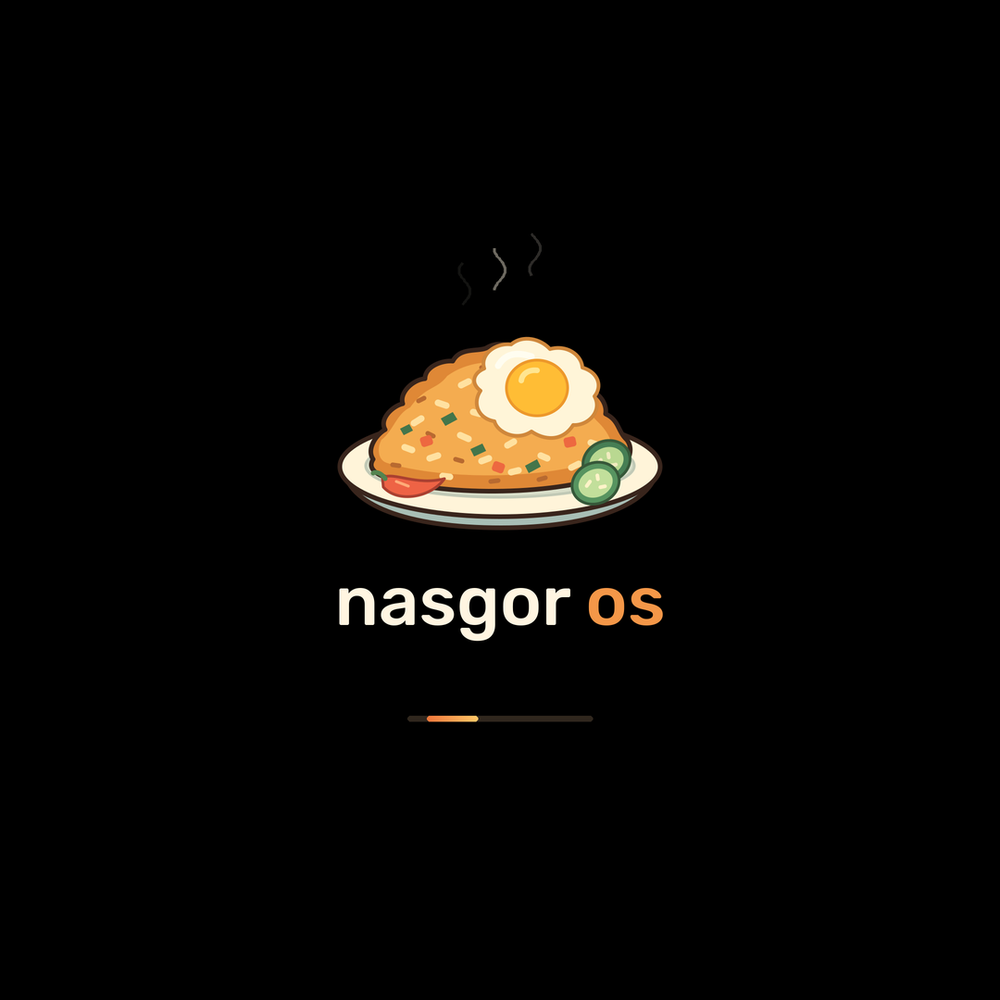

<!doctype html>
<html lang="id"><meta charset="utf-8"><meta name="viewport" content="width=device-width,initial-scale=1">
<title>nasgor os · Boot animation</title>
<style>
  *{box-sizing:border-box}body{margin:0;min-height:100svh;background:#11110f;color:#fff5e1;
  font:15px system-ui,sans-serif;display:grid;place-items:center;padding:32px 20px}
  main{text-align:center}h1{font-size:20px;font-weight:500;letter-spacing:-.5px;margin:0 0 10px}
  p{color:#a4a098;font-size:13px;margin:0 0 24px}a{color:#f49748;text-underline-offset:4px}
  .screen{width:min(340px,78vw);aspect-ratio:1080/2340;background:#000;border-radius:32px;
  overflow:hidden;display:grid;place-items:center;box-shadow:0 0 0 1px #33332d,0 24px 80px #0006}
  img{display:block;width:100%}footer{margin-top:24px;color:#a4a098;font-size:12px;line-height:1.8}
  @media(prefers-reduced-motion:reduce){.motion{display:none}}
  @media(prefers-reduced-motion:no-preference){.still{display:none}}
</style>
<main><h1>nasgor os</h1><p>Sepiring semangat untuk awal yang baru.</p>
<div class="screen">
</div>
<footer>Pratinjau boot animation · <a href="../bootanimation.zip" download>Unduh ZIP</a><br>
Di perangkat, loading berulang sampai boot selesai.</footer></main></html>
